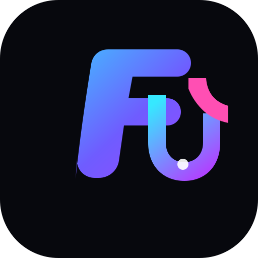

Подключение TikTok
Официальный OAuth-переход на страницу TikTok и возврат обратно в FLOWBOT.

FLOWBOT Открыть Console ↗Современный интерфейс FLOWBOT для работы с TikTok. Подключение аккаунта — через официальный OAuth, без передачи пароля.
Подключение через официальный TikTok Login Kit.
Статус аккаунта и рабочие параметры в одном месте.
Интерфейс показывает состояние подключения без лишнего.
01 — SYSTEM
Минимум шума. Максимум контроля. Интерфейс собран вокруг подключения и состояния TikTok-аккаунта.
Официальный OAuth-переход на страницу TikTok и возврат обратно в FLOWBOT.
Отображение подключённого аккаунта, статуса и состояния текущей сессии.
Чистая панель для просмотра основных параметров без перегруженного интерфейса.
Статусы и рабочая информация собраны в одном визуальном блоке.
02 — FLOW
Никаких форм с паролем TikTok. Только официальный переход и подтверждение доступа.
Переходишь в Console и запускаешь подключение.
TikTok показывает официальное окно входа и согласия.
FLOWBOT показывает состояние подключённого аккаунта.
03 — ANSWERS
Через официальный TikTok Login Kit. Пароль TikTok не вводится на сайте FLOWBOT.
После подтверждения доступа TikTok возвращает пользователя в FLOWBOT, где отображается статус подключения.
Да, управление подключением выполняется через предусмотренную серверную авторизацию и настройки аккаунта.
04 — CONTROL PANEL
Панель подключения TikTok. Нажми кнопку — ты перейдёшь на официальный экран авторизации TikTok.
Анализирует доступные данные TikTok и готовит действия для ручного подтверждения. Автоматические лайки и комментарии отключены.
Проверить подключение и доступные TikTok-разрешения.
Подключение ленты через официальный API появится после одобрения video.list.
AI может подготовить текст, а публикация остаётся под твоим контролем.
Переход на TikTok для авторизации
Возврат в FLOWBOT после подтверждения
Отображение результата подключения
05 — START
Если нужен запуск или помощь с настройкой FLOWBOT — напиши нам.
t.me/Osint0110 ↗